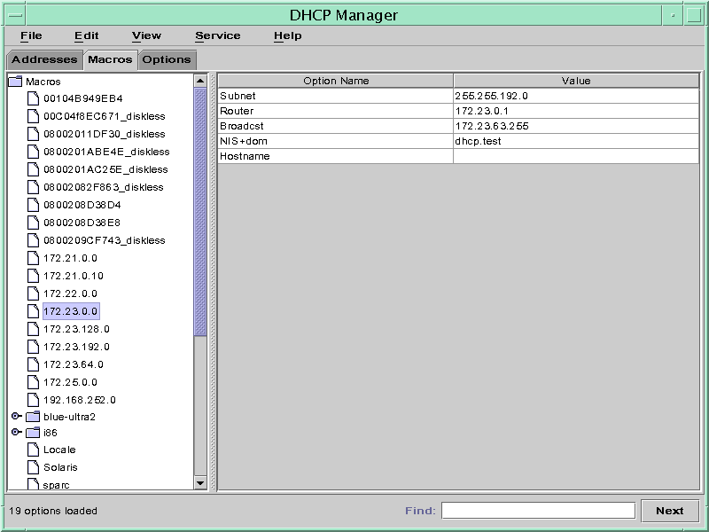
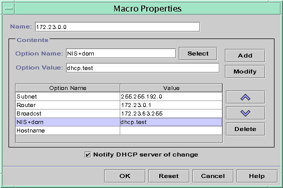
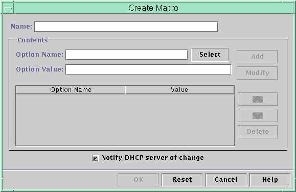

Document Information
Preface
Part I TCP/IP Administration
1. Solaris TCPIP Protocol Suite (Overview)
2. Planning an IPv4 Addressing Scheme (Tasks
3. Planning an IPv6 Addressing Scheme (Overview)
4. Planning an IPv6 Network (Tasks)
5. Configuring TCP/IP Network Services and IPv4 Addressing (Tasks)
6. Administering Network Interfaces (Tasks)
7. Enabling IPv6 on a Network (Tasks)
8. Administering a TCP/IP Network (Tasks)
9. Troubleshooting Network Problems (Tasks)
10. TCP/IP and IPv4 in Depth (Reference)
11. IPv6 in Depth (Reference)
Part II DHCP
12. About Solaris DHCP (Overview)
13. Planning for DHCP Service (Tasks)
14. Configuring the DHCP Service (Tasks)
15. Administering DHCP (Tasks)
About DHCP Manager
How to Start and Stop DHCP Manager
Setting Up User Access to DHCP Commands
How to Grant Users Access to DHCP Commands
Starting and Stopping the DHCP Service
How to Start and Stop the DHCP Service (DHCP Manager)
How to Enable and Disable the DHCP Service (DHCP Manager)
How to Enable and Disable the DHCP Service (dhcpconfig -S)
DHCP Service and the Service Management Facility
Modifying DHCP Service Options (Task Map)
How to Generate Verbose DHCP Log Messages (DHCP Manager)
How to Generate Verbose DHCP Log Messages (Command Line)
How to Enable and Disable DHCP Transaction Logging (DHCP Manager)
How to Enable and Disable DHCP Transaction Logging (Command Line)
How to Log DHCP Transactions to a Separate syslog File
How to Enable Dynamic DNS Updating for DHCP Clients
How to Customize DHCP Performance Options (DHCP Manager)
How to Customize DHCP Performance Options (Command Line)
Adding, Modifying, and Removing DHCP Networks (Task Map)
How to Specify Network Interfaces for DHCP Monitoring (DHCP Manager)
How to Specify Network Interfaces for DHCP Monitoring (dhcpconfig)
How to Add a DHCP Network (DHCP Manager)
How to Add a DHCP Network (dhcpconfig)
How to Modify the Configuration of a DHCP Network (DHCP Manager)
How to Modify the Configuration of a DHCP Network (dhtadm)
How to Remove a DHCP Network (DHCP Manager)
How to Remove a DHCP Network (pntadm)
Supporting BOOTP Clients With the DHCP Service (Task Map)
How to Set Up Support of Any BOOTP Client (DHCP Manager)
How to Set Up Support of Registered BOOTP Clients (DHCP Manager)
Working With IP Addresses in the DHCP Service (Task Map)
How to Add a Single IP Address (DHCP Manager)
How to Duplicate an Existing IP Address (DHCP Manager)
How to Add Multiple IP Addresses (DHCP Manager)
How to Add IP Addresses (pntadm)
How to Modify IP Address Properties (DHCP Manager)
How to Modify IP Address Properties (pntadm)
How to Mark IP Addresses as Unusable (DHCP Manager)
How to Mark IP Addresses as Unusable (pntadm)
How to Delete IP Addresses From DHCP Service (DHCP Manager)
How to Delete IP Addresses From the DHCP Service (pntadm)
How to Assign a Consistent IP Address to a DHCP Client (DHCP Manager)
How to Assign a Consistent IP Address to a DHCP Client (pntadm)
Working With DHCP Options (Task Map)
How to Create DHCP Options (DHCP Manager)
How to Create DHCP Options (dhtadm)
How to Modify DHCP Option Properties (DHCP Manager)
How to Modify DHCP Option Properties (dhtadm)
How to Delete DHCP Options (DHCP Manager)
How to Delete DHCP Options (dhtadm)
Supporting Solaris Network Installation With the DHCP Service
Supporting Remote Boot and Diskless Boot Clients (Task Map)
Setting Up DHCP Clients to Receive Information Only (Task Map)
Converting to a New DHCP Data Store
How to Convert the DHCP Data Store (DHCP Manager)
How to Convert the DHCP Data Store (dhcpconfig -C)
Moving Configuration Data Between DHCP Servers (Task Map)
How to Export Data From a DHCP Server (DHCP Manager)
How to Export Data From a DHCP Server (dhcpconfig -X)
How to Import Data on a DHCP Server (DHCP Manager)
How to Import Data on a DHCP Server (dhcpconfig -I)
How to Modify Imported DHCP Data (DHCP Manager)
How to Modify Imported DHCP Data (pntadm, dhtadm)
16. Configuring and Administering DHCP Clients
17. Troubleshooting DHCP (Reference)
18. DHCP Commands and Files (Reference)
Part III IP Security
19. IP Security Architecture (Overview)
20. Configuring IPsec (Tasks)
21. IP Security Architecture (Reference)
22. Internet Key Exchange (Overview)
23. Configuring IKE (Tasks)
24. Internet Key Exchange (Reference)
25. Solaris IP Filter (Overview)
26. Solaris IP Filter (Tasks)
Part IV Mobile IP
27. Mobile IP (Overview)
28. Administering Mobile IP (Tasks)
29. Mobile IP Files and Commands (Reference)
Part V IPMP
30. Introducing IPMP (Overview)
31. Administering IPMP (Tasks)
Part VI IP Quality of Service (IPQoS)
32. Introducing IPQoS (Overview)
33. Planning for an IPQoS-Enabled Network (Tasks)
34. Creating the IPQoS Configuration File (Tasks)
35. Starting and Maintaining IPQoS (Tasks)
36. Using Flow Accounting and Statistics Gathering (Tasks)
37. IPQoS in Detail (Reference)
Glossary
Index
|
Working With DHCP Macros (Task Map)
DHCP macros are containers of DHCP options. The Solaris DHCP service uses macros to
gather options that should be passed to clients. DHCP Manager and the dhcpconfig
utility create a number of macros automatically when you configure the server. See
About DHCP Macros for background information about macros. See Chapter 14, Configuring the DHCP Service (Tasks) for information about macros created
by default. You might find that when changes occur on your network, you need
to make changes to the configuration information that is passed to clients. To change
configuration information, you need to work with DHCP macros. You can view,
create, modify, duplicate, and delete DHCP macros. When you work with macros, you must know about DHCP standard options, which
are described in the dhcp_inittab(4) man page. The following task map lists tasks to help you view, create, modify, and
delete DHCP macros. The following figure shows the Macros tab in the DHCP Manager window. Figure 15-14 DHCP Manager's Macros Tab
How to View Macros Defined on a DHCP Server (DHCP Manager)
- In DHCP Manager, select the Macros tab.
See How to Start and Stop DHCP Manager for information about DHCP Manager. The Macros area on the left side of the window displays, in alphabetical
order, all the macros defined on the DHCP server. Macros preceded by a
folder icon include references to other macros, whereas macros preceded by a document
icon do not reference other macros.
- To open a macro folder, click the handle icon to the left of
the folder icon.
The macros that are included in the selected macro are listed.
- To view the content of a macro, click the macro name.
Options and their assigned values are displayed.
How to View Macros Defined on a DHCP Server (dhtadm)
- Become superuser or assume a role or user name that is assigned to
the DHCP Management profile.
For more information about the DHCP Management profile, see Setting Up User Access to DHCP Commands. Roles contain authorizations and privileged commands. For more information about roles, see Configuring RBAC (Task Map) in System Administration Guide: Security Services.
- Display the macros by typing the following command:
# dhtadm -P This command prints to standard output the formatted contents of the dhcptab
table, including all macros and symbols defined on the DHCP server.
Modifying DHCP Macros
You might need to modify macros when some aspect of your network changes
and one or more DHCP clients need to know about the change.
For example, you might add a router or an NIS server, create a
new subnet, or change the lease policy. Before you modify a macro, determine the name of the DHCP option
you want to change, add, or delete. The standard DHCP options are listed
in the DHCP Manager help and in the dhcp_inittab(4) man page. You can use the dhtadm -M -m command or DHCP Manager to modify macros. See
the dhtadm(1M) man page for more information about dhtadm. The following figure shows DHCP Manager's Macro Properties dialog box. Figure 15-15 Macro Properties Dialog Box in DHCP Manager
How to Change Values for Options in a DHCP Macro (DHCP Manager)
- In DHCP Manager, select the Macros tab.
See How to Start and Stop DHCP Manager for information about DHCP Manager.
- Select the macro that you want to change.
- Choose Properties from the Edit menu.
The Macro Properties dialog box opens.
- In the table of Options, select the option that you want to change.
The option's name and its value are displayed in the Option Name and
Option Value fields.
- In the Option Value field, select the old value and type the new
value for the option.
- Click Modify.
The new value is displayed in the options table.
- Select Notify DHCP Server of Change.
This selection tells the DHCP server to reread the dhcptab table to put
the change into effect immediately after you click OK.
- Click OK.
How to Change Values for Options in a DHCP Macro (dhtadm)
- Become superuser or assume a role or user name that is assigned to
the DHCP Management profile.
For more information about the DHCP Management profile, see Setting Up User Access to DHCP Commands. Roles contain authorizations and privileged commands. For more information about roles, see Configuring RBAC (Task Map) in System Administration Guide: Security Services.
- Change option values by typing a command of the following format:
# dhtadm -M -m macroname -e 'option=value:option=value' -g For example, to change the lease time and the Universal Time Offset in
the macro bluenote, you would type: # dhtadm -M -m bluenote -e 'LeaseTim=43200:UTCOffst=28800' -g
How to Add Options to a DHCP Macro (DHCP Manager)
- In DHCP Manager, select the Macros tab.
See How to Start and Stop DHCP Manager for information about DHCP Manager.
- Select the macro that you want to change.
- Choose Properties from the Edit menu.
The Macro Properties dialog box opens.
- In the Option Name field, specify the name of an option by using
one of the following methods:
- Click the Select button next to the Option Name field to select an
option to add to the macro.
The Select Option dialog box displays an alphabetized list of names of standard
category options and descriptions. If you want to add an option that is
not in the standard category, use the Category list to select a category. See About DHCP Macros for more information about macro categories.
- Type Include if you want to include a reference to an existing macro
in the new macro.
- Type the value for the option in the Option Value field.
If you typed Include as the option name, you must specify the name
of an existing macro in the Option Value field.
- Click Add.
The option is added to the bottom of the list of options in
this macro. To change the option's position in the macro, select the
option and click the arrow buttons to move the option up or down
in the list.
- Select Notify DHCP Server of Change.
This selection tells the DHCP server to reread the dhcptab table to put
the change into effect immediately after you click OK.
- Click OK.
How to Add Options to a DHCP Macro (dhtadm)
- Become superuser or assume a role or user name that is assigned to
the DHCP Management profile.
For more information about the DHCP Management profile, see Setting Up User Access to DHCP Commands. Roles contain authorizations and privileged commands. For more information about roles, see Configuring RBAC (Task Map) in System Administration Guide: Security Services.
- Add options to a macro by typing a command of the following format:
# dhtadm -M -m macroname -e 'option=value' -g For example, to add the ability to negotiate leases in the macro
bluenote, you would type the following command: # dhtadm -M -m bluenote -e 'LeaseNeg=_NULL_VALUE' -g Note that if an option does not require a value, you must use
_NULL_VALUE as the value for the option.
How to Delete Options From a DHCP Macro (DHCP Manager)
- In DHCP Manager, select the Macros tab.
See How to Start and Stop DHCP Manager for information about DHCP Manager.
- Select the macro that you want to change.
- Choose Properties from the Edit menu.
The Macro Properties dialog box opens.
- Select the option that you want to remove from the macro.
- Click Delete.
The option is removed from the list of options for this macro.
- Select Notify DHCP Server of Change.
This selection tells the DHCP server to reread the dhcptab table to put
the change into effect immediately after you click OK.
- Click OK.
How to Delete Options From a DHCP Macro (dhtadm)
- Become superuser or assume a role or user name that is assigned to
the DHCP Management profile.
For more information about the DHCP Management profile, see Setting Up User Access to DHCP Commands. Roles contain authorizations and privileged commands. For more information about roles, see Configuring RBAC (Task Map) in System Administration Guide: Security Services.
- Delete an option from a macro by typing a command of the following
format:
# dhtadm -M -m macroname -e 'option=' -g For example, to remove the ability to negotiate leases in the macro
bluenote, you would type the following command: # dhtadm -M -m bluenote -e 'LeaseNeg=' -g If an option is specified with no value, the option is removed from
the macro.
Creating DHCP Macros
You might want to add new macros to your DHCP service to
support clients with specific needs. You can use the dhtadm -A -m command or DHCP Manager's
Create Macro dialog box to add macros. See the dhtadm(1M) man page
for more information about the dhtadm command. The following figure shows DHCP Manager's Create Macro dialog box. Figure 15-16 Create Macro Dialog Box in DHCP Manager
How to Create a DHCP Macro (DHCP Manager)
- In DHCP Manager, select the Macros tab.
See How to Start and Stop DHCP Manager for information about DHCP Manager.
- Choose Create from the Edit menu.
The Create Macro dialog box opens.
- Type a unique name for the macro.
The name can be up to 128 alphanumeric characters. If you use
a name that matches a vendor class identifier, network address, or client ID,
the macro is processed automatically for appropriate clients. If you use a different name,
the macro is not processed automatically. The macro must be assigned to
a specific IP address or included in another macro that is processed
automatically. See Macro Processing by the DHCP Server for more detailed information.
- Click the Select button, which is next to the Option Name field.
The Select Option dialog box displays an alphabetized list of names of standard
category options and their descriptions. If you want to add an option that
is not in the standard category, use the Category list. Select the category
that you want from the Category list. See About DHCP Options for more information about
option categories.
- Select the option to add to the macro, and click OK.
The Macro Properties dialog box displays the selected option in the Option Name
field.
- Type the value for the option in the Option Value field, and click
Add.
The option is added to the bottom of the list of options in
this macro. To change the option's position in the macro, select the
option and click the arrow buttons to move the option up or down
in the list.
- Repeat Step 5 and Step 6 for each option you want to add to the
macro.
- Select Notify DHCP Server of Change when you are finished adding options.
This selection tells the DHCP server to reread the dhcptab table to put
the change into effect immediately after you click OK.
- Click OK.
How to Create a DHCP Macro (dhtadm)
- Become superuser or assume a role or user name that is assigned to
the DHCP Management profile.
For more information about the DHCP Management profile, see Setting Up User Access to DHCP Commands. Roles contain authorizations and privileged commands. For more information about roles, see Configuring RBAC (Task Map) in System Administration Guide: Security Services.
- Create a macro by typing a command of the following format:
# dhtadm -A -m macroname -d ':option=value:option=value:option=value:' -g There is no limit to the number of option=value pairs that can be
included in the argument to -d. The argument must begin and end with
colons, with colons between each option=value pair. The complete string must be enclosed
in quotation marks. For example, to create the macro bluenote, type the following command: # dhtadm -A -m bluenote -d ':Router=10.63.6.121\ :LeaseNeg=_NULL_VALUE:DNSserv=10.63.28.12:' -gNote that if an option does not require a value, you must use
_NULL_VALUE as the value for the option.
Deleting DHCP Macros
You might want to delete a macro from the DHCP service. For
example, if you delete a network from the DHCP service, you can also
delete the associated network macro. You can use the dhtadm -D -m command or DHCP Manager to delete macros.
How to Delete a DHCP Macro (DHCP Manager)
- In DHCP Manager, select the Macros tab.
See How to Start and Stop DHCP Manager for information about DHCP Manager.
- Select the macro to delete.
The Delete Macro dialog box prompts you to confirm that you want to
delete the specified macro.
- Select Notify DHCP Server of Change.
This selection tells the DHCP server to reread the dhcptab table to put
the change into effect immediately after you click OK.
- Click OK.
How to Delete a DHCP Macro (dhtadm)
- Become superuser or assume a role or user name that is assigned to
the DHCP Management profile.
For more information about the DHCP Management profile, see Setting Up User Access to DHCP Commands. Roles contain authorizations and privileged commands. For more information about roles, see Configuring RBAC (Task Map) in System Administration Guide: Security Services.
- Delete a macro by typing a command of the following format:
# dhtadm -D -m macroname -g For example, to delete the macro bluenote, you would type the following command: # dhtadm -D -m bluenote -g
|